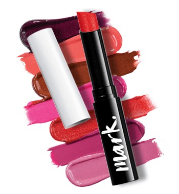

Avon, la Compañía para la Mujer, es una compañía de belleza líder a nivel mundial, con cerca de $11 mil millones de dólares en ingresos anuales. Al ser una de las compañías de venta directa más grandes del mundo, Avon vende productos a mujeres a través de 6 millones de Representantes de Ventas Avon independientes. Los productos Avon están disponibles en más de 100 países y la línea de productos incluye cosméticos, productos para el cuidado de la piel, fragancias, ropa y productos para el hogar, con marcas reconocidas como Avon Color, ANEW, Skin-So-Soft, Advanced Techniques y más. El Señor David H. McDonnell inició su negocio de venta de libros, de puerta en puerta, regalando una fragancia creada por él mismo por la compra de cada libro. Sus fragancias se volvieron tan populares que con el tiempo muchas mujeres adquirían libros para poder obtener, los apreciados perfumes de McDonnell, Desde el año 2001, la compañía está presidida por la ejecutiva canadiense.

|